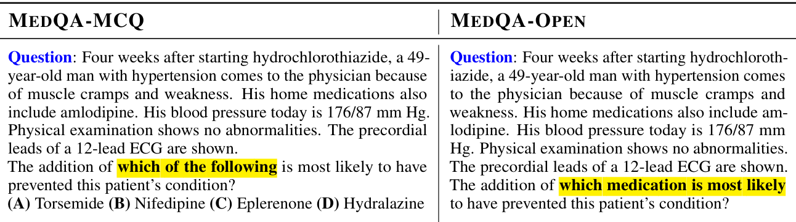
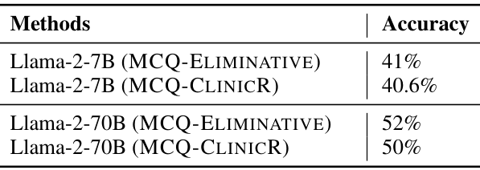
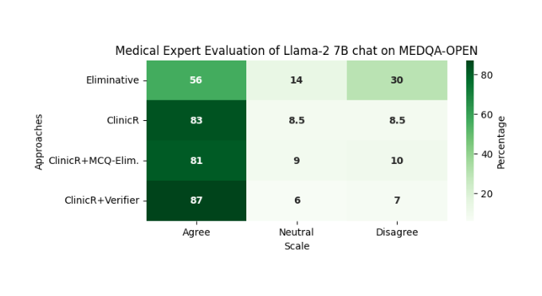
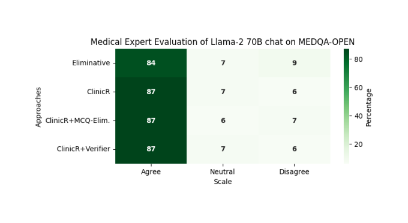
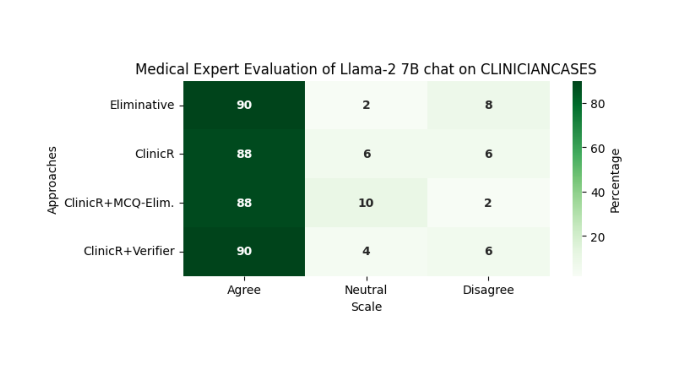
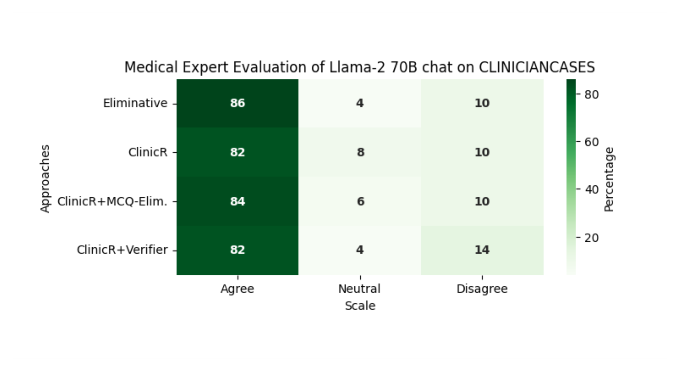
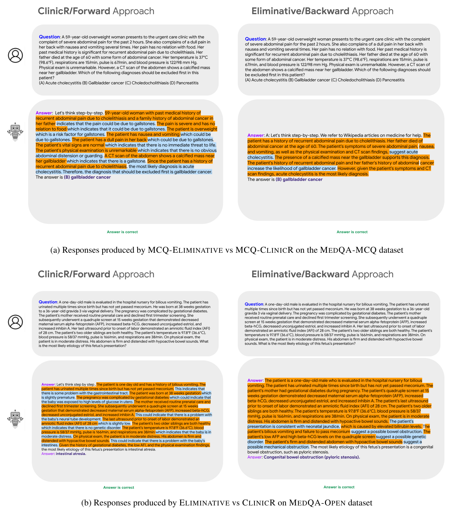

Few Shot Chain-of-Thought Driven Reasoning to Prompt LLMs for Open Ended Medical Question Answering
Medical question-answering benchmarks such as MedQA give the model four options to choose from. Patients do not arrive with options. A model that does well by eliminating distractors may not be able to reason its way to an answer from a patient history, and multiple-choice accuracy cannot tell the two apart. We show that the way a model is prompted to reason matters much more once the options are taken away.
We built MedQA-Open, a version of MedQA-USMLE with the options removed and clinician-approved reasoned answers, and ClinicR, a five-shot chain-of-thought prompt that reasons forward from the history the way a clinician builds a differential diagnosis. A forward-backward pipeline then generates candidate answers with ClinicR and narrows them down with an eliminative prompt or a trained verifier. On open questions with Llama-2-7B, medical experts agree with 56% of the answers from the standard eliminative prompt, 83% with ClinicR, and 87% with ClinicR and the verifier.

From multiple choice to open questions
MedQA-Open is built from the MedQA-USMLE questions by removing the options and rewording each question so that it no longer refers to them: "which of the following is most likely" becomes "which medication is most likely". We also collected 25 real cases from practising clinicians, which we call ClinicianCases.

Two ways to reason about a case
Eliminative. The standard few-shot chain-of-thought prompt for MedQA (Liévin et al., 2022) copies the relevant patient information, then considers the options in order, accepting or rejecting each, and stops at the first one that fits. We adapt it to open questions by removing the option labels and replacing references such as "the answer is (C)" with the option's text. Without options, though, there is little to eliminate.
ClinicR. Clinicians do not work from a list. They take a piece of the history, form candidate diagnoses, take the next piece, and add or drop candidates until examinations and investigations point to an answer. ClinicR's five examples, written with medical professionals, teach the model to do the same: copy one finding at a time, update the differential, and end with "The answer is …".

Generate a differential, then narrow it down
Even when the model's first answer is wrong, one of several samples is often right. The forward-backward approach uses this. In the forward step, ClinicR samples ten answers to the open question. Near-duplicates are removed by lexical overlap, and the four most likely answers are kept as options \(\mathcal{O}_q\). In the backward step, one of two selectors picks the final answer: the MCQ-Eliminative prompt, or a trained verifier that scores each option \(o\) together with its reasoning \(r_o\),
\[ \hat a = \arg\max_{o \in \mathcal{O}_q} \; V_\phi(q,\; r_o,\; o). \]Training the verifier. From each MedQA multiple-choice question we make four examples, one per option, labelled 1 if correct and 0 otherwise, each paired with a generated rationale for that option. In a check of 50 sampled rationales per label, about 97% were correct. The verifier is Llama-2-7B-chat or Llama-2-70B-chat with a linear head, trained with LoRA on a reward-modelling loss.
Results
With options, the prompt hardly matters. On the 1,273-question MedQA-MCQ test set, the two prompting styles are within two points of each other at both model sizes. When the options are on the page, incremental reasoning brings no advantage.

Without options, it does. There is no exact-match metric for open answers, so eight final-year medical students rated each answer's reasoning and conclusion as agree, neutral or disagree, on 500 MedQA-Open questions. With Llama-2-7B, the eliminative prompt gets agreement on 56% of answers and disagreement on 30%. ClinicR reaches 83%, ClinicR followed by MCQ-Eliminative 81%, and ClinicR with the verifier 87%.

The gap closes with scale. With Llama-2-70B every method reaches 84 to 87% agreement: the larger model can draw on what it knows even without a structured prompt.

Real cases. On the 25 ClinicianCases all methods score highly, with 88 to 90% agreement for the 7B model and 82 to 86% for the 70B model. With so few cases, the differences between methods are small.


Why options hurt. MCQ distractors are written to mislead medical students, and they can mislead models too, by confining the reasoning to the listed choices. An open question lets the model consider the full range of possibilities from the history, which is closer to how diagnosis actually works.

Limitations
- Not clinical validation. These are question-answering benchmarks with expert ratings on a three-point scale. The generated reasoning is not medical advice and no substitute for a clinician.
- One model family. All experiments use Llama-2 chat models; other open models are untested.
- Parametric knowledge only. The model answers from what it learned in pretraining. Retrieval or medical knowledge graphs could widen that knowledge.
Takeaway
Multiple-choice accuracy overstates how well a model can reason about a patient. Take the options away and the prompt starts to matter. Reasoning forward from the history, the way a clinician builds a differential, gives answers that experts agree with far more often, especially for smaller models.
Citation
@inproceedings{nachane2024fewshot,
title = {Few Shot Chain-of-Thought Driven Reasoning to Prompt {LLMs} for Open-Ended Medical Question Answering},
author = {Nachane, Saeel Sandeep and Gramopadhye, Ojas and Chanda, Prateek and Ramakrishnan, Ganesh and Jadhav, Kshitij Sharad and Nandwani, Yatin and Raghu, Dinesh and Joshi, Sachindra},
booktitle = {Findings of the Association for Computational Linguistics: EMNLP 2024},
year = {2024}
}